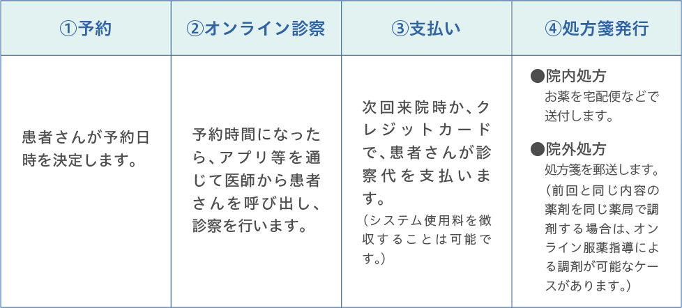

情報通信機器が普及し、医療においても、オンライン診療の活用にスポットライトが当たるようになってきました。
2018年以降、オンライン診療の指針が作成され、オンライン診療として診療報酬を算定できるようになり、
ここ数年でオンライン診療を取り巻く状況が変化しています。オンライン診療は、
在宅療養中で通院できない場合や通院時間の短縮などの患者さんにとってのメリットだけでなく、
病院が少ない地域や働き方改革の推進における医療従事者の生産性の向上、緊急時の院内感染拡大防止につながることから、
さらに普及することが期待されます。
「オンライン診療の今を知る」と題したこのシリーズでは、3回にわたってオンライン診療の概要、
実際の導入事例について紹介していきます。第1回は、オンライン診療にかかる2020年4月の診療報酬改定のポイントのほか、
オンライン診療の進め方などについて解説します。（2020年6月15日時点の情報を基に作成）
オンライン診療とは、パソコン、スマートフォンやタブレットなどの情報通信機器を利用して、 診察や医学管理などを行う診療行為です。厚生労働省が2018年3月に発表した 「オンライン診療の適切な実施に関する指針」1）では、オンライン診療について「遠隔医療のうち、 医師－患者間において、情報通信機器を通して、患者の診察及び診断を行い診断結果の伝達や処方等の診療行為を、 リアルタイムにより行う行為。」と定義しています。なお、継続治療中の患者さんなどから、 緊急的に電話がかかってきて、治療上の意見を求められた時に、それに対して必要な指示をした場合は、 電話等による再診となり、オンライン診療と区別されています。
オンライン診療にかかる診療報酬は2018年４月に新設され2）、2020年4月の診療報酬改定3）では、 算定要件の一部が緩和されました（表）。主なものは、事前の対面診療の期間の短縮、 従来の生活習慣病・てんかん・難病などの対象疾患に加え、 慢性頭痛と一部の在宅自己注射を行っている患者が新たに追加されたほか、 緊急時対応に関する施設基準も見直されました※
※ 新型コロナウイルス感染症の感染拡大防止のため、2020年4月から、 電話による診療・パソコンなどの情報通信機器を使用した診療に関して、患者さんの希望があった場合、 診断や処方が医師の責任の下で医学的に可能であると判断した範囲において、 初診から診療を行って差し支えない、といった時限的・特例的な措置が適応されています4）。
「令和２年度診療報酬改訂の概要（外来医療・かかりつけ機能）」 厚生労働省（令和2年3月5日、 https://www.mhlw.go.jp/content/12400000/000605491.pdf )を基に加工して作成
オンライン診療を始めるには、情報通信機器、インターネットなどのいわば院内インフラ整備のほかに、 スマートフォンやパソコン、 タブレット端末で運用する際に使用するクラウトサービスを含むオンライン診療システムを選定する必要があります。 オンライン診療では、患者さんのプライバシーを守るため、 情報漏洩・不正アクセスを防ぐための十分なセキュリティ対策も必須です。それ以外には、 地方厚生（支）局に施設基準の届け出を行う必要があります。
3ヵ月以上対面診療をした上で、患者さんの心身状態などから、オンライン診療の導入が可能です。
「令和２年度診療報酬改訂の概要（外来医療・かかりつけ機能）」 厚生労働省（令和2年3月5日、 https://www.mhlw.go.jp/content/12400000/000605491.pdf )を基に加工して作成
オンライン診療を行うには、まず、対面診療とオンライン診療を組み合わせた診療計画を作成します1、3）※。
患者さんに診療計画について同意を得た上で、可能な限り診療計画は文書やデータにして、
患者さんが閲覧できるようにしておきます1）。
オンライン診療を行うことが決まったら、
患者さんに医療機関で導入しているアプリケーションのインストールを依頼します。
スマートフォンやタブレット端末に不慣れな患者さんには、
ご家族や身体的サポートをされる方を交えて事前に使用方法を説明する必要があるでしょう。
※新型コロナウイルスの感染拡大を防ぐため、 特例として、事前に診療計画を作成していなくても、 慢性疾患などの継続処方の薬剤を処方することが認められています4)。
下記のような流れでオンライン診療を行います。
オンライン診療を行った場合、月１回に限りオンライン診療料71点を算定できます5)。 また、個別の医学管理料を算定すべき医学管理を行った場合は、 月1回に限り管理料100点を算定できます5)。
「令和２年度診療報酬改訂の概要（外来医療・かかりつけ機能）」 厚生労働省（令和2年3月5日、 https://www.mhlw.go.jp/content/12400000/000605491.pdf )を基に加工して作成
以上、今回は、オンライン診療の診療報酬改定のポイントと、 導入までのアプローチについてご紹介しました。第2回は、 実際にオンライン診療を行っている医師からお話を伺い、現場の声をお届けします。
レファレンス